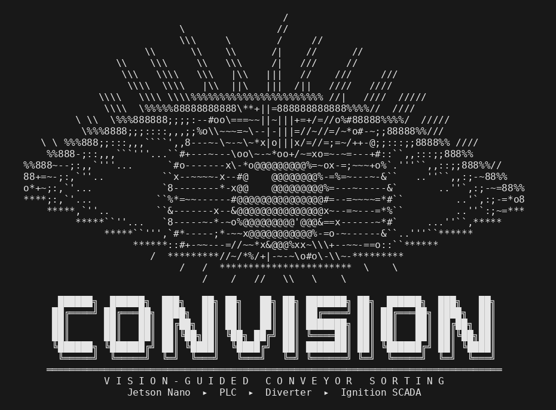

Capstone Design · ICET 4751 · Fall 2026
CONVISION, a vision-guided conveyor sorter
A Jetson Nano camera classifies parts on a running belt. The PLC swings a diverter wedge to sort them, every detection lands in a SQL table, and an Ignition SCADA screen shows counts and belt state. The live page walks one full cycle in a 3D scene you can orbit.
Capstone · concept animation
JetMax elevator storage
A robot arm on a rear lift mast stores parts in a rack. Native WebGL, two-link inverse kinematics, orbit and overhead views, and a regression check that samples 5,766 poses.
Robotics · Python · PLC
JetMax control scripts
Custom scripts for the Hiwonder JetMax arm on a Jetson Nano: vision pick from a conveyor, Allen-Bradley PLC integration, and WASD jogging for teaching positions.
Industry research · 2026 to now
Hunt / LaSalle sawmill analytics
Downtime and trim-loss analytics for a Louisiana sawmill. Process model of every machine center, live signal views on the production dashboard, work-order attribution, and an agentic analysis loop.
Industry research · 2024 to 2026
Betaflix RAG tutor
Built and scored local retrieval pipelines with LlamaIndex, ChromaDB, and Ollama for technical training content. Automated grading, NLI-based scoring, and the write-ups that went back to the company.
Explainer · self-contained HTML
Inside the instruction
A 1080p animation of what happens inside one ARMv8-A instruction, packaged as a single HTML page with no external assets.
Team tool · Supabase
Common Ground idea board
A no-login idea board for the capstone team. Post, vote, comment, one vote per browser. Static page on GitHub Pages with a small Postgres schema behind it.
Study · 2021 to 2026
Longitudinal study
Coursework to industrial judgment, traced over five years. All data and graphics embedded in one page.
Tooling · Gmail API
Email-scraper
Command-line tool that fetches work email, summarizes it with a local model, and turns threads into a de-duplicated task list.